LEVEL DESIGN
Unannounced Game
Internship
Stockyard and Stables. This area is the city’s Stockyard and Stables, a central hub where players can buy and upgrade horses, as well as gather essential supplies for upcoming raids. The exterior is a dusty, fenced yard with wagons and a large wooden barn, giving it an authentic feel. Inside, players can find stalls with horses, NPC caretakers, and a supply shop filled with saddles, gear, and equipment. It serves as both a practical stop for preparing expeditions and a lively social point in the city.


 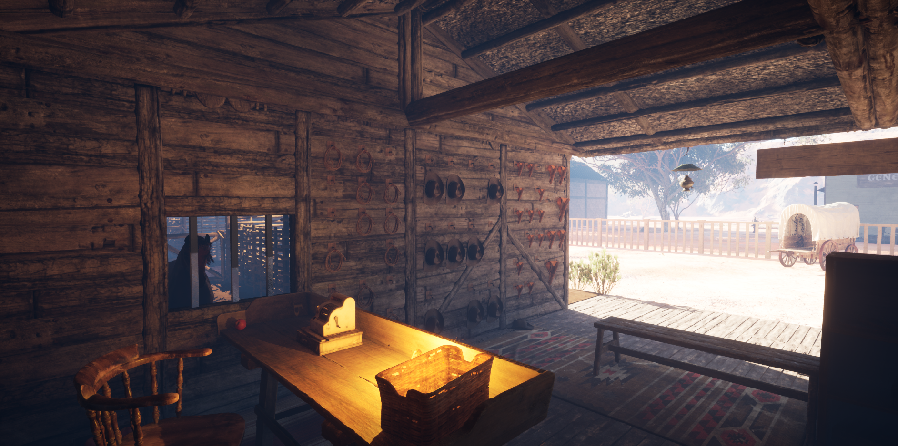
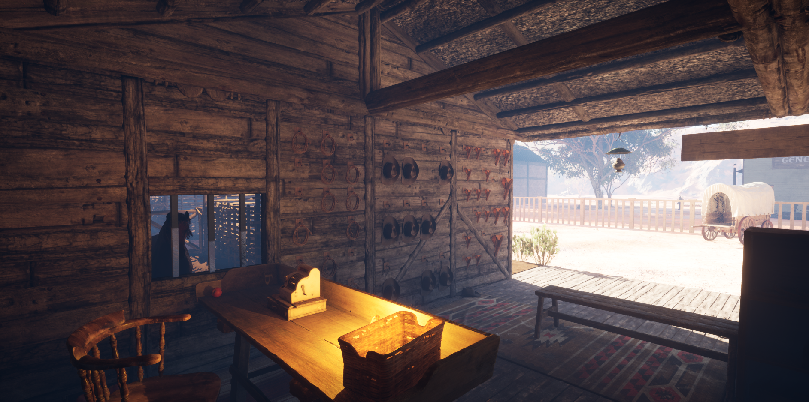


Unannounced Game
Internship
Farm. A quieter point of interest designed as a low-intensity exploration zone. Wheat fields, fenced crops, and a weathered barn set the stage, with only a handful of hostile encounters. Instead of heavy fighting, the focus is on searching for resources. Players can find chests the in barns and fields containing currency, weapons, and ammo. The farm feels peaceful yet slightly tense, rewarding curiosity and careful exploration over brute force.


Unannounced Game
Internship
Copper and Tin Mine. (WIP) A sprawling, maze-like network of tunnels, with walls reinforced with timbers and rails winding deep underground. Combat is minimal, but the real challenge lies in navigating the twisting passages to reach a high-value treasure hidden at the heart of the mine. Above ground, players find a fantasy-inspired settlement with a shimmering lake, rustic worker houses, and industrial buildings tied to the mining. The blend of natural beauty and gritty industry makes the mine both dangerous and rewarding, encouraging players to explore every dark corner.
 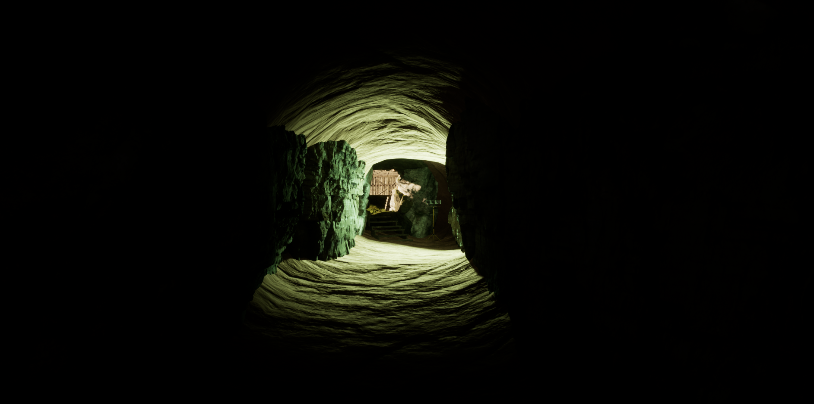
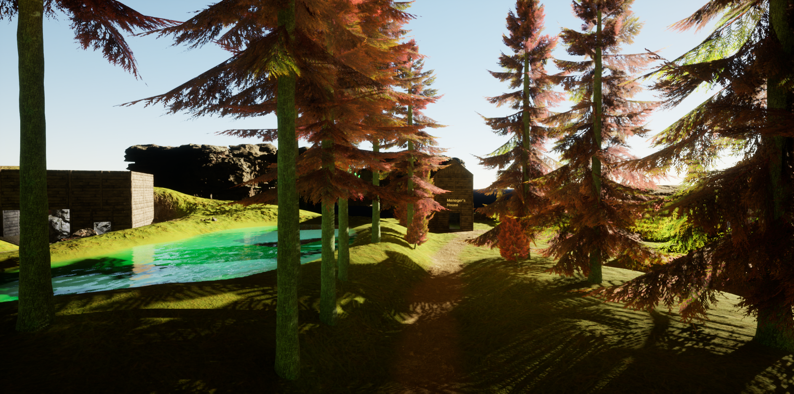
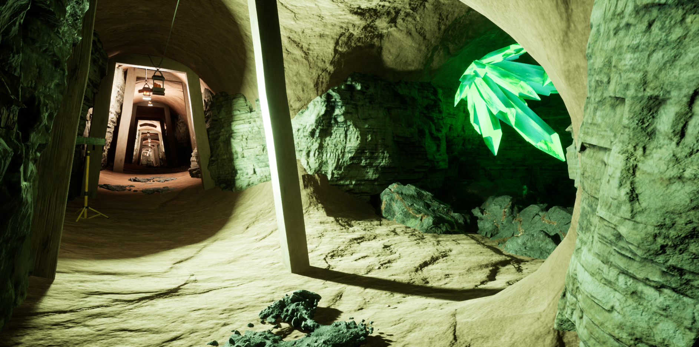
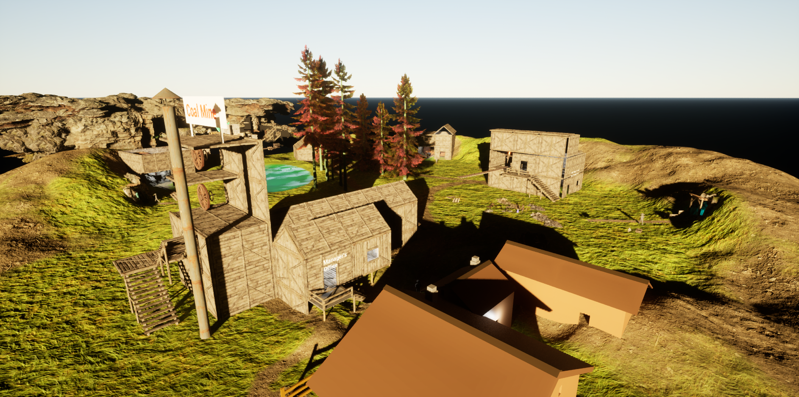
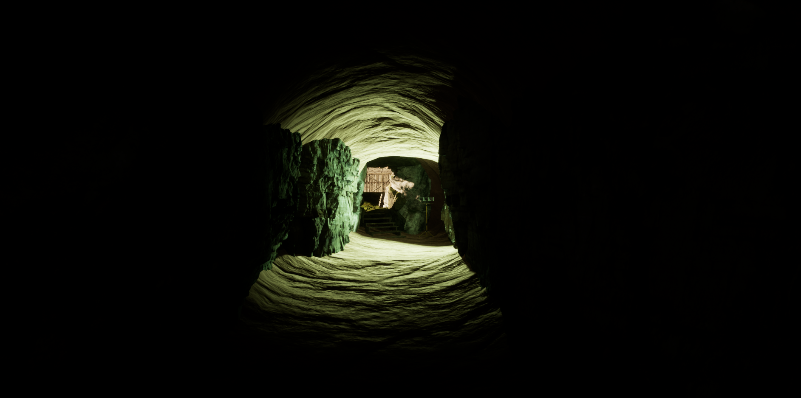
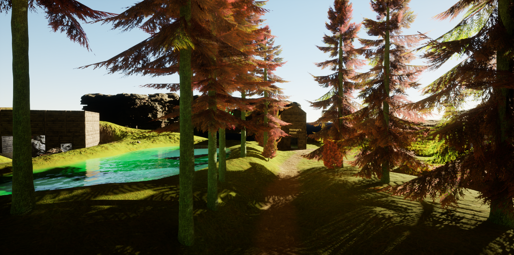
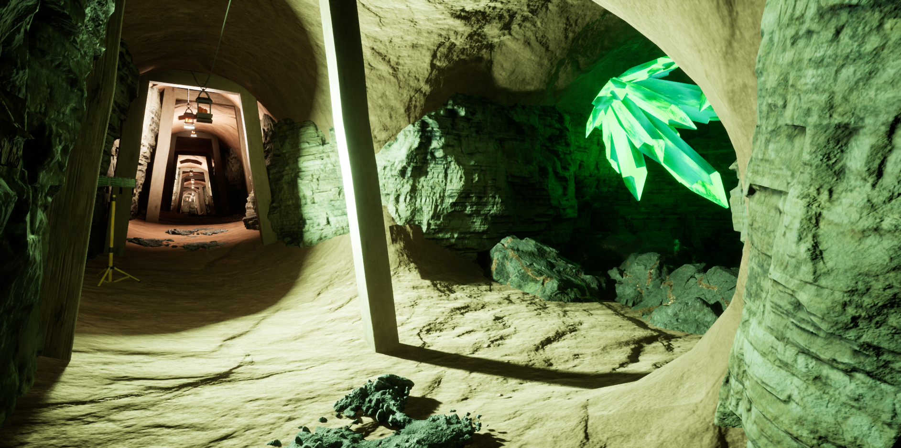
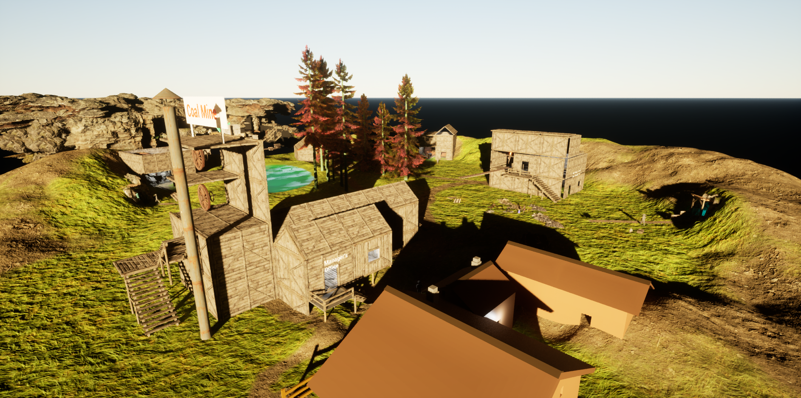

Daredevil
Fan Game
Home Level. (WIP) This serves as Daredevil’s base of operations, designed as an interactive hub with distinct zones that each serve a purpose. The kitchen allows the player to heal, while the living room offers a space to relax between missions. Progress can be saved in the upstairs bedroom, training is possible in the dojo, and the armory provides access to weapon selection. A gritty twist reimagines the bathroom as an interrogation room, where players can select missions.


Daredevil
Fan Game
Level One: Shipyard. (WIP) Set in New York’s docks, this is a hostile combat environment filled with enemies and narrative clues. The main warehouse contains a challenging boss fight. Smaller warehouses hide civilians in need of rescue, as well as valuable hints tied to the larger story. A heavily guarded security room brings waves of thugs, testing the player’s combat skills before advancing deeper into the operation.


Elixir Run: Saya's Trials
Group Project
Magical Forest. This level takes place in a mystical forest where players play as a fairy on a quest to gather rare glowing ingredients. Red mushrooms, sun berries, moon berries, and blue flowers are scattered in specific, carefully designed locations. The environment shifts between serene lakes, cascading waterfalls, and shadowy forests, creating both beauty and mystery. Once the ingredients are collected, players must reach the portal to complete the run, crafting their finds into potions.


 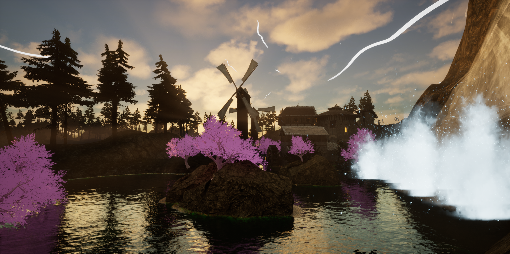
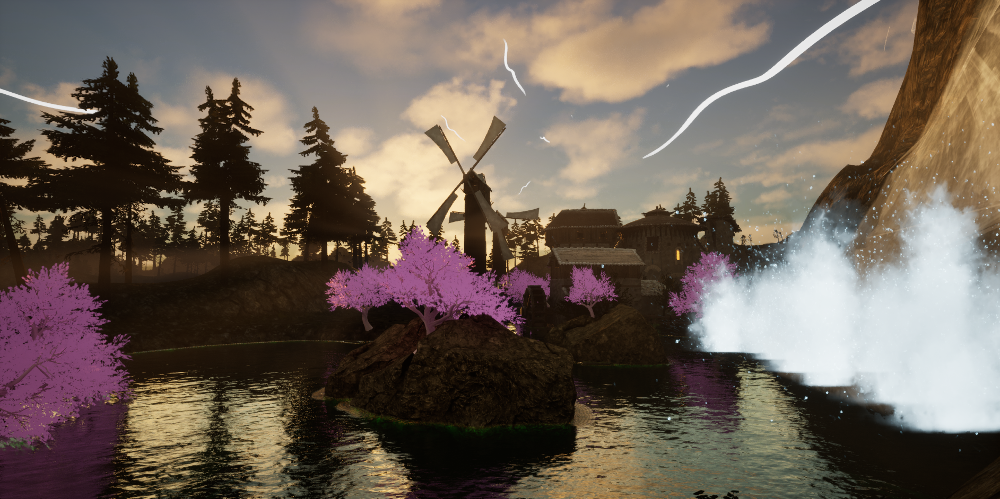